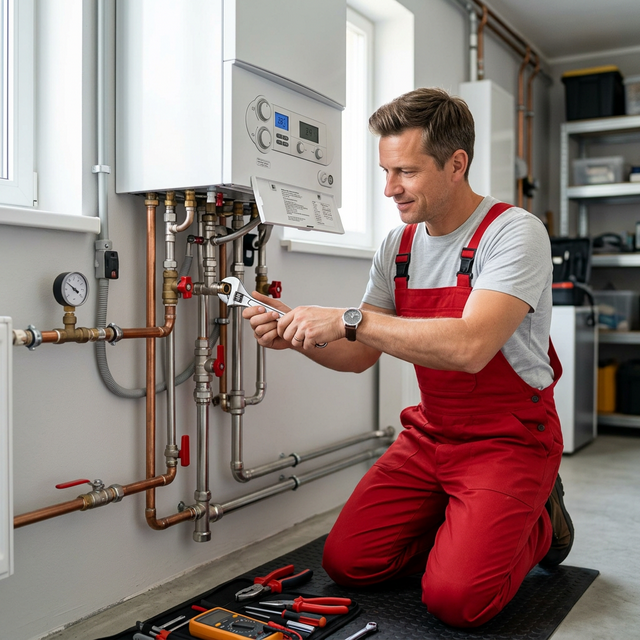
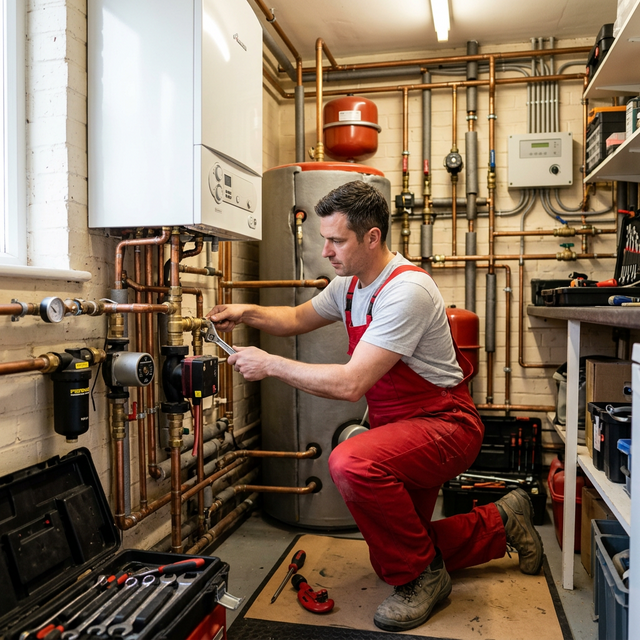
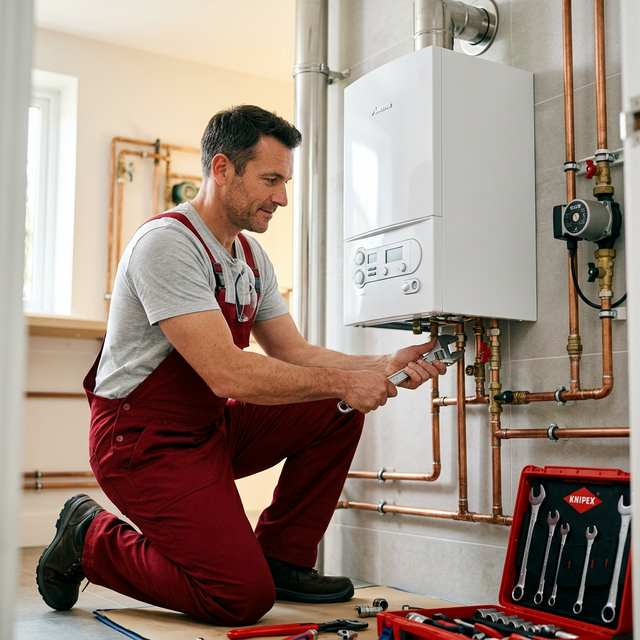
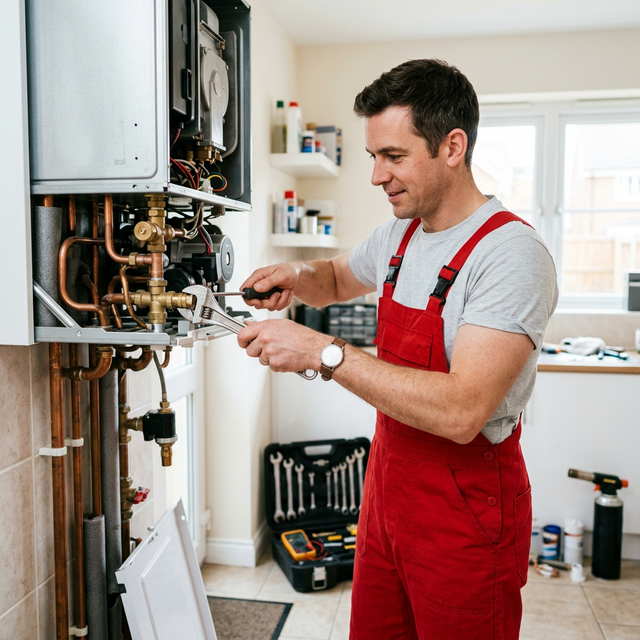

Thermenwartung in Linz
24/7 Hilfe
Egal ob unangenehmer Gasgeruch, ein plötzliches Gasgebrechen oder eine streikende Heizanlage: Wir garantieren eine zügige Thermenreparatur, einen reibungslosen Thermentausch und die routinemäßige Gasthermenwartung zu absolut fairen Konditionen.

Umfassende Thermenservice in Linz und Umgebung.
Ganz gleich, ob Sie ein routinemäßiges Thermenservice, eine akute Thermenreparatur oder einen vollständigen Thermentausch benötigen – wir stehen als verlässlicher Ansprechpartner für eine hochwertige und günstige Thermenwartung an Ihrer Seite. Auch im Falle einer unerwarteten Thermenstörung, bei einem dringenden Thermen Notdienst, einer plötzlich auftretenden Heizungsstörung oder dem totalen Thermenausfall leisten wir im Handumdrehen Erste Hilfe. Von der einfachen Überprüfung der Gastherme bis zur Neumontage – vertrauen Sie auf unsere langjährige Expertise.
THERMENWARTUNG LINZ
Eine regelmäßige Wartung der Gastherme ist unverzichtbar, um die Sicherheit und Funktionalität Ihrer Anlage langfristig zu gewährleisten und die Nutzungsdauer zu maximieren. Im Zuge einer fachgerechten Inspektion werden sämtliche Verschleißteile geprüft, sicherheitsrelevante Module kontrolliert und das Gerät so justiert, dass ein sparsamer Energieverbrauch sichergestellt ist. Eine professionelle Inspektion hilft nicht nur dabei, Heizanlagenkosten zu minimieren, sondern schützt auch vor plötzlichen Defekten und erfüllt wichtige gesetzliche Richtlinien.
THERMENSERVICE LINZ
Ein gewissenhaft durchgeführtes Thermenservice beinhaltet die detaillierte Prüfung Ihres Heizsystems, die Säuberung des Wärmetauschers, einen Check der Brennkammer sowie die präzise Nachjustierung der Gaszufuhr. Durch diesen wiederkehrenden Thermenservice wird die Effektivität des Brenners verbessert und die Betriebssicherheit dauerhaft gestärkt. Überdies werden sämtliche Betriebsfunktionen ausgiebig getestet, um etwaige Fehlerquellen vorab zu identifizieren und kostenintensive Folgeschäden zu unterbinden.
THERMENTAUSCH LINZ
Ein sachkundiger Thermentausch bietet sich an, wenn Ihr altes Gasgerät nicht mehr effizient läuft, veraltet oder ständig defekt ist. Bei einem Thermentausch wird das bestehende System professionell demontiert und durch eine zeitgemäße, energieschonende Anlage ersetzt, die modernsten Standards entspricht. Ein rechtzeitig durchgeführter Gerätetausch minimiert den Gasverbrauch, verbessert das Raumklima und sorgt auf lange Sicht für niedrigere Heizkosten sowie eine garantierte Wärmeversorgung.
THERMENREPARATUR LINZ
Eine prompte und fachmännische Thermenreparatur ist unerlässlich, sobald Ihre Heizanlage Mängel aufweist oder gar den Dienst quittiert. Während der Thermenreparatur erörtern unsere Techniker präzise die Fehlerursache und setzen defekte Bauteile umgehend wieder in Stand oder tauschen diese aus. Das oberste Ziel einer jeden Thermenreparatur ist es, die hundertprozentige Funktionalität Ihrer Anlage schnellstens zurückzugewinnen und teure Folgeschäden durch anhaltenden Stillstand abzuwenden.
GASINSTALLATIONEN LINZ
Unser Service in der Kategorie Gasinstallationen beinhaltet die sachkundige Konzeption, Montage und regelmäßige Überprüfung aller Gasleitungen sowie Gasgeräte. Höchstmögliche Sicherheit bei Gasinstallationen ist die Grundvoraussetzung für einen risikofreien und funktionierenden Einsatz Ihrer Koch- und Heizanlagen. Sollte zudem ein Gasgebrechen oder bedenklicher Gasgeruch auftreten, leisten wir im Zuge unserer Gasinstallationen sofortige Hilfe, um jede Art von Risiko zu neutralisieren.
Installateur Notdienst
Der kompetente Installateur Notdienst ist zu jeder Tages- und Nachtzeit Ihr vertrauenswürdiger Ansprechpartner, wenn Sanitär- oder Heizungsgebrechen auftreten. Sei es ein spontaner Heizungsausfall, ein massiver Rohrbruch oder eine kritische Störung – als Installateur Notdienst übernehmen wir unmittelbar die Fehlersuche und leiten rettende Schritte ein. Als vollumfänglicher 24 Stunden Thermenwartung und Notfall-Partner sichert der Installateur Notdienst zügige Interventionen sowie maximale Sicherheit zu – selbstverständlich auch an Sonn- und Feiertagen.
Schnelle Anfrage
Wir warten Gasthermen aller Marken
WARTUNG, SERVICE, TAUSCH, REPARATUR & NOTDIENST
Egal von welchem Hersteller Ihre Therme stammt, wir bieten professionelles Thermenservice, Thermewartung, Thermentausch und Thermenreparatur. Zu unserem Fachgebiet zählen Geräte unter anderem von:
Thermenwartung, Reparatur & Heizungsservice in Linz – Service für viele Marken
Unsere Fachexperten warten Heizungssysteme direkt in Linz, dem Bezirk Linz-Land sowie angrenzenden Regionen in Oberösterreich. Wir sind Ihre erste Wahl, wenn es um Thermenwartung, detaillierte Thermenreparatur oder einen kompletten Thermentausch für die bekanntesten Qualitätsmarken geht. Konkret betreuen wir unter anderem Anlagen von Austria Email, Bosch, Baxi, Junkers, Vaillant, Buderus, Wolf, Gebe, Löblich, Viessmann und Saunier Duval. Auch wenn Sie Schwierigkeiten mit klassischen Gasthermen, fortschrittlichen Brennwertthermen, Heizkesseln, Kombithermen oder alternativen Heizlösungen haben, springen wir verlässlich ein. Mit unserem erstklassigen Service kümmern wir uns um alle Aspekte rund um Wartung, Reparatur sowie Notfall-Behebungen bei Ihrer Heizungsanlage, sodass es in Ihren vier Wänden stets warm und behaglich bleibt.
Schnelle Hilfe bei Heizungsstörung in Linz – AUSTRIA EMAIL THERMEN SERVICE
Ihre Heizanlage streikt oder Sie frieren, weil die Heizung ausgefallen ist? Wir sind in Linz, in Linz-Land und in ganz Oberösterreich rasch vor Ort und kümmern uns um alle Arten von Heizungsproblemen. Speziell für Austria Email Heizsysteme gewährleisten wir einen lückenlosen Service, sei es bei der regulären Thermenwartung oder der akribischen Überprüfung Ihrer Anlagen. Dabei übernehmen wir jegliche Thermenreparatur, führen bei Bedarf einen kompletten Thermentausch durch und halten Gasthermen, Brennwertthermen, Heizkessel sowie Kombithermen in Schuss. Auch Warmwasserboiler und Boilerheizungen werden von uns begutachtet, damit Ihre Gasheizung stets mit optimaler Effizienz heizt.
Wartung, Reparatur & Heizungsservice vom Profi – BOSCH THERMEN IN LINZ
Sie suchen nach sofortiger Hilfe bei einer drohenden Heizungsstörung in Linz und dem Umland? Auf unseren Service ist absolut Verlass – wir rücken umgehend aus, wenn Ihre Heizanlage Probleme bereitet. Spezialisiert auf Bosch Heizsysteme, deckt unser Leistungskatalog die kompetente Wartung, fachkundige Reparatur sowie den professionellen Austausch moderner Heizanlagen in Linz und der gesamten Region Oberösterreich ab. Unser Know-How spannt sich von Gasthermen und Brennwertthermen bis hin zu Heizkesseln und den umfangreichen Heizungsanlagen. Auch Wärmepumpen, Hybridheizungen und praktische Kombithermen warten wir routiniert.
24 Stunden Notdienst bei Heizungsausfall – BAXI THERME IN LINZ
Läuft die Heizung unregelmäßig oder bleibt das Warmwasser kalt, ist rasches Handeln gefragt. Unser Fachteam agiert in Linz sowie in Linz-Land reaktionsschnell und steht Ihnen bei jedweden Heizungsproblemen zur Seite. Bei Baxi Heizsystemen stemmen wir das komplette Thermenservice und sind ebenso beim Thermentausch oder der Thermenreparatur für Sie im Einsatz. Unser Angebot umfasst zudem die gezielte Wartung von Gasthermen, Brennwertgeräten und komplexen Heizkesseln. Auch Warmwasserboiler, Kombithermen und neuartige Heizsysteme werden von unseren versierten Profis turnusmäßig untersucht.
Thermenwartung, Reparatur oder Austausch – JUNKERS HEIZUNGSSERVICE LINZ
Heizungsstörungen lassen meist nicht auf sich warten – vor allem, wenn es draußen frostig ist. Unser Team beseitigt Ihre Sorgen rund um die Heizanlage in Linz und der breitflächigen Region Oberösterreich unverzüglich. Für zuverlässige Junkers Heizsysteme sichern wir ein ganzheitliches Service-Paket zu. Ganz gleich, ob Thermenwartung, notwendige Thermenreparatur oder ein effizienter Thermentausch bei etablierten Gasthermen, Brennwertthermen und den klassischen Heizkesseln. Genauso konsequent werden Warmwasserboiler, Kombithermen und alle weiteren Bestandteile Ihrer Heizungsanlagen durch uns laufend gewartet.
Soforthilfe bei Heizungsproblemen – VAILLANT THERME SERVICE IN LINZ
Gibt es eine Störmeldung bei der Heizung oder lässt die Heizkraft deutlich nach? Kontaktieren Sie unsere Fachleute in Linz, Linz-Land sowie im gesamten oberösterreichischen Großraum für prompte Lösung bei allen Heizungsproblemen. Als Betreuer von Vaillant Heizsystemen führen wir jegliche Maßnahmen zur Thermenwartung, zielgerichteten Thermenreparatur und bei Bedarf den fachgerechten Thermentausch durch. Das betrifft klassische Gasthermen, Brennwertgeräte als auch großformatige Heizkessel. Unsere Wartung erstreckt sich auch auf Hybridheizungen, Wärmepumpen und Kombithermen, sodass Ihr System stets perfekt läuft.
Professionelle Wartung und Reparatur Ihrer Heizung – BUDERUS THERMEN IN LINZ
Totaler Heizungsausfall oder nervenaufreibende Schwierigkeiten mit der Anlage? Wir als Installateure in Linz und dem Umland leisten bei ersten Anzeichen von Störungen oder für die regelmäßige Instandhaltung Erste Hilfe. Wenn es um renommierte Buderus Heizungen geht, veranlassen wir die präzise Wartung, die zügige Reparatur und bei Bedarf den sorgfältigen Austausch von Heizanlagen. Gasheizungen, Brennwertheizungen, komplexe Heizsysteme und Heizkessel befinden sich bei uns logistisch und handwerklich in den besten Händen. Gleiches gilt für gängige Warmwasserboiler und kompakte Kombithermen.
Soforthilfe im Heizungsnotfall in Linz – WOLF THERMENSERVICE
Macht Ihre Heizungsanlage unerwartete Geräusche, fällt aus oder meldet einen Fehlercode, sind wir in Linz und im übrigen Oberösterreich rasend schnell bei Ihnen. Unser Fachpersonal hat sich unter anderem auf Wolf Heizsysteme spezialisiert und übernimmt die fachgemäße Thermenwartung, jede Art von Thermenreparatur und bei Dringlichkeit den Thermentausch von klassischen Gasthermen, Brennwertthermen sowie Heizkesseln. Außerdem fallen auch ökologischere Systeme wie Wärmepumpen, Hybridheizungen und Kombithermen in unser routiniertes Serviceportfolio.
Schneller Service bei Heizungsstörungen – GEBE HEIZUNGSSERVICE LINZ
Unerwarteter Ärger mit der Heizung oder eisiges Duschwasser? Unser Not- und Kundendienst in Linz und Linz-Land ist durchgängig erreichbar, um bei leidigen Heizungsstörungen Abhilfe zu schaffen. Wenden Sie sich beruhigt an uns, wenn Sie Gebe Heizsysteme nutzen: Wir bieten erstklassige Betreuung und fokussieren uns auf die gewissenhafte Wartung, verlässliche Reparatur und den modernen Austausch von Gasthermen, kompakten Brennwertgeräten und Heizkesseln, um den Wert Ihrer Heizungsanlage langfristig zu erhalten.
Wartung und Reparatur moderner Heizungsanlagen – LÖBLICH THERMEN IN LINZ
Bei der ersten Heizungsstörung oder gar einem bedenklichen Systemausfall zählt jede Minute. Unser geschultes Team ist in ganz Linz und quer durch Oberösterreich für Sie da, um Heizungsprobleme in den Griff zu kriegen. Wir übernehmen den vollumfänglichen Service für Löblich Heizsysteme und führen dabei die Thermenwartung, notwendige Thermenreparatur oder einen künftigen Thermentausch durch. Das schließt zahlreiche Anlagen wie Gasthermen, Brennwertthermen, moderne Kombithermen, klassische Heizkessel, Warmwasserboiler und weite Teile kompletter Heizsysteme mit ein.
Zuverlässiger Kundendienst für Heizsysteme – VIESSMANN THERMEN SERVICE LINZ
Erfüllt Ihre Heizanlage nicht mehr ihren Zweck oder ist das anstehende Serviceintervall überschritten? Unsere Spezialisten in Linz und seinem Ballungsraum helfen unbürokratisch und zeitnah. Im Umgang mit Viessmann Heizsystemen bieten wir einen bestens geschulten Dienst an den Geräten und kümmern uns intensiv um Gasthermen, sparsame Brennwertthermen und kräftige Heizkessel. Obendrein zählen die penible Wartung und Reparatur zukunftsweisender Heizungsanlagen, effizienter Wärmepumpen sowie platzsparender Kombithermen zu unseren Kernaufgaben.
24/7-NOTDIENST FÜR THERMEN-STÖRUNGEN, REPARATUR ODER TAUSCH – SAUNIER DUVAL THERME IN LINZ
Heizungskollapse ereignen sich zumeist ohne Vorwarnung und schreien nach handwerklicher Direkthilfe. Wir stellen in Linz, ganz Linz-Land sowie im übrigen Landesteil Oberösterreich die Erreichbarkeit sicher und beheben anspruchsvollste Heizungsprobleme im Nu. Der Service unserer Techniker deckt sämtliche Saunier Duval Heizsysteme ab und bündelt hierbei Leistungen wie Thermenwartung, akute Thermenreparatur und einen reibungslosen Thermentausch. Hierzu gehören Gasthermen, umweltschonende Brennwertgeräte, Kombithermen der neuesten Generation, Heizkessel und folglich auch Ihre ganzheitlichen Heizungsanlagen.
Thermenwartung Linz – Sicherheit und
Effizienz
für Ihre Heizungsanlage
Damit Betriebssicherheit, Energieersparnis und die Nutzdauer Ihrer Heizungsanlage garantiert bleiben, ist eine regelmäßige Thermenwartung in Linz essenziell. Üblicherweise sollte diese Gasthermen Wartung im Abstand von einem Jahr vorgenommen werden. Nur dieses Intervall sichert einen wirklich problemlosen, sicheren Einsatz. Darüber hinaus setzen sowohl Gerätehersteller als auch Haushaltsversicherer einen sachgemäßen Wartungsbeleg voraus.
Wir führen für Sie die professionelle Wartung von Thermen sämtlicher relevanter Herstellermarken und Bauarten durch – von bewährten Gasthermen über hochmoderne Brennwertthermen bis zu Heizkesseln oder Kompaktgeräten. Mit einer vorbeugenden Heizungswartung durch unsere Profis vermeiden Sie nicht nur schwerwiegende Reparaturen oder totale Anlagenausfälle, sondern dämmen auch einen unnötig hohen Gasverbrauch effektiv ein.
Unsere routinierten Installateure checken alle sicherheitskritischen Module, reinigen verrußte oder blockierte Komponenten penibel und stimmen die Geräteeinstellungen fehlerfrei ab. Der Zweck jeder fachkundigen Thermenwartung Linz ist es, die absolute Kraft Ihrer Heizung lange zu konservieren und das Höchstmaß an Sicherheit für Ihr Zuhause zu garantieren.
Was umfasst eine professionelle Thermenwartung?
- Gründliche Funktions- und Sicherheitskontrolle der gesamten Anlage
- Reinigung von Brenner und Wärmetauscher zur Effizienzsteigerung
- Überprüfung des Ausdehnungsgefäßes und aller sicherheitsrelevanten Bauteile
- Kontrolle der Dichtheit sowie Optimierung der Geräteeinstellungen
- Austausch von Verschleißteilen bei Bedarf (Material separat verrechnet)
- Entlüftung und abschließende Dokumentation mit Prüfprotokoll
Durch eine fristgerecht absolvierte Thermenwartung wappnen Sie sich gegen plötzlichen Heizungsausfall, bewahren sich vor aussteigenden Heizkosten und dämmen sämtliche Verbrennungsrisiken rigoros ein. Setzen Sie auf unseren etablierten Service in Linz – verlässlich, absolut qualifiziert und pünktlich.
Was gehört zu einem
regelmäßigen Thermenservice?
Das wiederkehrende, jährliche Thermenservice ist eine grundlegende Voraussetzung dafür, Gefährdungen wie etwa den ungewollten Abgasaustritt zu unterbinden und zeitgleich Laufzeit sowie Wärmeleistung Ihres Aggregats zu pushen. Dieses Service-Paket enthält typischerweise diese Schritte:
- check_circle Regelmäßiger Thermenservice
- check_circle Überprüfung und Reinigung Ihrer Gastherme
- check_circle Professionelle Reinigung des Wärmetauschers
- check_circle Individuelle Einstellung der Gaszufuhr
- check_circle Regelmäßige Überprüfung des Ausdehnungsgefäßes
- check_circle Optimierung aller Einstellungen
- check_circle Entlüftung der Heizkörper
- check_circle Kontrolle des Kohlenmonoxidausstoßes
Rundum-Service für Therme
und Heizung in Linz
Als Ihr erfahrener Partner im Bereich Thermenwartung Linz und ganzheitliches Heizungsservice decken wir alle anfallenden Schritte komplett inhouse ab. Begonnen bei der strengen, zyklischen Kontrolle durch unsere Mitarbeiter bis hin zur unaufschiebbaren Reparatur oder dem Tausch des Heizblocks – wir nehmen uns kompetent Ihrer Heizanlage an. Unsere routinierte Mannschaft rückt sowohl für ein reguläres Service als auch im echten Ernstfall zielgerichtet aus.
Das Expertenwissen unserer Mannschaft spannt sich über verschiedenste Systemlandschaften – folglich nicht nur über herkömmliche Gasthermen und die verwandte Kombitherme. Wir konzipieren auch ausgedehnte Heizanlagen für Privatwohnungen, ganze Häuserverbände und den gewerblichen Bereich, einschließlich hochmoderner Brennwertthermen, Heizkessel-Modifikationen sowie ressourcensparenden Wasserspeichern.
In gleicher Manier sorgen wir uns um die fehlerfreie Überprüfung und Instandhaltung von Warmwasserboilern, Strom- oder gasgebundenen Durchlauferhitzern und Gaskesseln jeglicher Bauart. Im Zentrum unseres Angebots stehen neben den traditionellen Öl- und Gasverbrennungsanlagen ebenso fortschrittliche Fabrikate wie die innovativen Luftwärmepumpen.
Im Zuge unseres umfangreichen Heizungsservices in Linz versprechen wir den absolut effizienten, gesicherten und langfristigen Betrieb Ihrer Anlage. Dauerhafte Thermenwartungen wehren Ausfälle souverän ab, drosseln Ihren Brennstoffkonsum stark und verheizen Ihnen gleichzeitig eine beruhigende Betriebssicherheit – für ein permanent wohlwollend klimatisiertes Heim.

Thermentausch in Linz –
moderne Technik
Sollte Ihre derzeitige Anlage oft Defekte zeigen oder nicht mehr die gewünschte Heiz-Performance erbringen, stellt der sachverständige Thermentausch Linz die goldrichtige Alternative dar. Ältere Gasthermen verbrennen im Tagesgeschäft oft viel zu viel Energie und kurbeln somit die Heiztarife beträchtlich nach oben. Wir zeigen Ihnen die Welt zeitgemäßer Brennwertthermen, konzipieren das auf Sie zugeschnittene Heizsystem und wickeln den Thermentausch von A bis Z für Sie ab – Demontage und fehlerfreier Montage inklusive.
Der planmäßig durchgeführte Gerätewechsel rentiert sich für Sie: Die Effizienz nimmt kräftig zu, der Wohnraum wird deutlich aufgewertet und Ihre Betriebssicherheit schnellt in die Höhe.

Thermenreparatur Linz –
schnelle Hilfe bei Störungen
Blinkt am Display ein Error, ist ein Druckverlust spürbar oder kühlen Ihre Räume zunehmend aus? Das Not-Team für Thermenreparatur Linz gräbt sich rasch bis zum Kern des Ausfalls vor und bereinigt den Schaden. Gilt Ihre Störung der Zündtechnik, defekten Dichtungen oder stehen Sie vor dem abrupten Heizungsausfall – wir bürgen für eine sachdienliche Instandsetzung Ihrer regulären Gastherme bzw. Kombitherme.
Ausgestattet mit dem Insiderwissen rund um diverseste Bautypen und Serienmodelle wickeln wir den Prozess zu Hundert Prozent auf Augenhöhe ab. Auf diese Art ist Ihre Thermenreparatur nicht nur günstig, sondern beschert Ihnen in Linz binnen kürzester Zeit die gewünschte Heizenergie zurück.

24H NOTDIENST FÜR THERMEN UND HEIZSYSTEME
Unser Team ist 24 Stunden täglich für Sie erreichbar – telefonisch unter 0664 9334 2464 sowie per E-Mail. Wir nehmen uns Zeit für Ihr Anliegen, beraten Sie persönlich und bieten Ihnen eine Lösung, die genau auf Ihre Situation abgestimmt ist. Kontaktieren Sie uns jederzeit – wir sind gerne für Sie da.
call 0664 9334 2464Häufig gestellte Fragen
Die Thermenwartung Kosten sind unterschiedlich hoch und richten sich nach dem Gerätemodell, dem Baujahr der Gastherme und eventuell benötigten Zubehör- oder Ersatzteilen. Wir punkten stets mit nachvollziehbaren sowie fairen Preissystemen. Für eine preiswerte, fachgerechte Thermenwartung oder einen maßgeschneiderten Kostenvoranschlag rufen Sie uns einfach jederzeit an.
Die rechtliche Lage in Österreich (inkl. ABGB sowie MRG) sieht grundsätzlich vor, dass Mieter:innen die Kosten für die wiederkehrende, fristgerechte Wartung der Gastherme zu tragen haben (Wartungspflicht). Der oder die Vermieter:in hat im Gegenzug die finanzielle Last bei plötzlich unumgänglichen Reparaturen oder einem notwendigen kompletten Thermentausch bei Totalausfall zu schultern (Erhaltungspflicht). Beachten Sie dringend, dass die Erhaltungspflicht des Vermieters in der Regel nur dann besteht, wenn die empfohlenen Wartungsintervalle restlos und belegbar eingehalten wurden.
UNSERE EINSATZGEBIETE
Bezirke in Land Linz: Wir sind in allen Bezirken und Gemeinden in Linz im Einsatz
Egal, ob Sie mitten im Zentrum wohnen oder in den Außenbezirken angesiedelt sind – unser Thermen Notdienst-Team ist für sämtliche Stadtteile extrem schnell greifbar.
Einige Gemeinden in Linz-Umgebung: Wir sind in ganz Linz tätig
Unsere passionierten Installateure bürgen für minimale Anfahrtszeiten und überbringen Ihnen clevere wie langlebige Lösungen für jede Heizungs- und Sanitäranlage im kompletten Gebiet Linz-Umgebung.